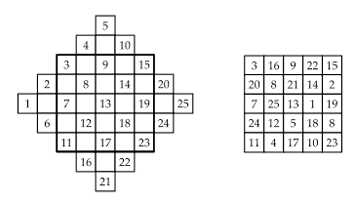

SİHİRLİ KARE OLUŞTURUN
Sihirli kareler yatay, dikey ve çapraz karelerindeki sayıların toplamı eşit olan karelerdir. Sihirli kareler nasıl oluşturulur? Siz de böyle bir sihirli kare oluşturun.
Cevap:
Aşağıda sağda sihirli bir kare var. Dikey, yatay ve çapraz sıraların toplamı 65. Solda böyle bir sihirli karenin hazırlanabileceğini görüyorsunuz. 5x5’lik büyük bir karenin kenarlarına önce karelik, onun üstüne 1 karelik pir parça ekliyorsunuz. Şimdi bu sağdaki şekilde sol kenardaki kareye 1, onun üstüne 2, onun sağ üstüne 3 yazın. Aynı şekilde 4 ve 5’i de yazın. Ardından 1-2-3-4-5 çapraz sırasına paralel olacak şekilde 6-7-8-9-10 çapraz sırasını yazın. Bu şekilde devam edin. Şimdi kalın kenarlı 5x5’lik karenin dışında kalan sayıların her birini 5 kare ilerleterek 5x5’lik karenin içindeki boş kareye oturtun. Örneğin; 2 beş kare sağa kayıp 15 ile 19’un arasına, 1 beş kare sağa kayıp 14 ile 18’in arasına, 21 beş kare yukarı kayıp 8 ile 14’ün arasına vb. girer. İşte sihirli kareniz hazır.
